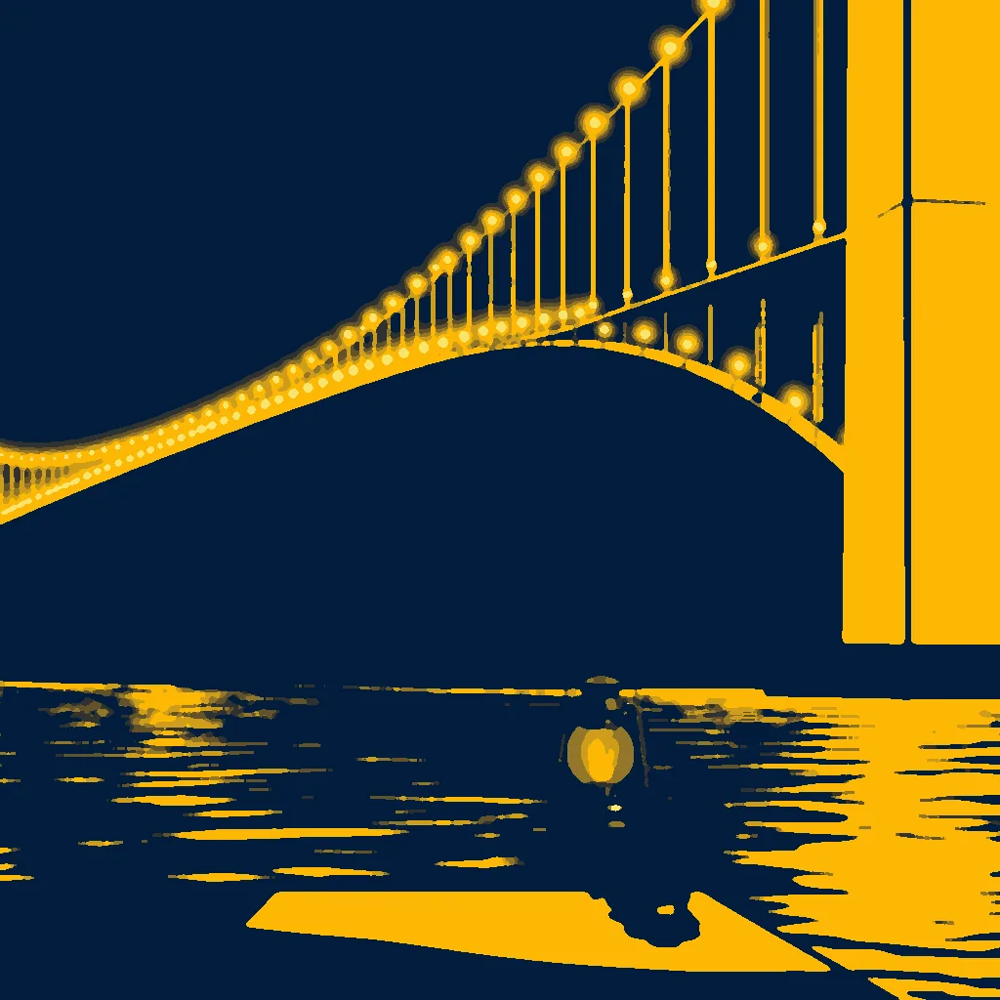

First Light ·
Flame's First Breath
a lantern lighting up on a pier post → the whole bridge lit up, one great arc of gold across the strait
Wick hums, then flares—click of the valve. A second's pause, then light bleeds through glass, smeared along the pier's black post. The flame swells, slow as a diver's breath unfolding in the dark.
Bridge arcs, a thousand bulbs stitch the strait, like a needle through thread. Water glows under the weight of their gold. The current bends, slow as a lever pushed past its stop.
The bench's edge warms, a faint blush where the bridge's light spilled. A hand places a stone where the flame first pooled.
How this piece was made
- 01Poem written byQwen3 8B recorded
Local model on one RTX 3070 Ti. It writes separate drafts that never see each other. A draft that breaks a fixed rule gets a score of 0. A second local model, Qwen3.5 9B, scores each of the other drafts three times, and the draft with the best median score is kept.
- 02Image brief written byQwen3 8B recorded
Local model. It reads the poem and writes the subject part of the picture brief. Code writes the rest.
- 03Image rendered byFLUX.1 [schnell] recorded
Local image model on the same graphics card. It draws several candidates. Before judging, code crops each one and flattens it to at most eight colours, so the image shown is not the raw render.
- 04Image chosen byClaude Opus 5.5 recorded
Claude, working as c01corp’s art critic. It scores each candidate blind, without seeing the poem or the other candidates.
- Poem drafts
- 4 of 4
- Poem score
- 6/10
- Image candidates
- 4
- Judge’s score
- 4/10
- Selection
- Highest-scoring candidate that matched the subject. It did not clear the judge’s bar.
The image brief
Code wrote everything before “The subject:”. The local model wrote the part after it. When the chosen picture was a redraw, the judge’s notes on what to fix were added to the end of this brief and are not shown here.
A bold flat-colour screen-print poster of the whole bridge lit up, one great arc of gold across the strait, and small and crisp in front of it, a lantern lighting up on a pier post. The poster is saturated and high-contrast, made of broad flat shapes with hard clean edges, every shape one solid colour cut like paper, with no shading, no gradient and no glow inside any shape, no photographic detail, no soft focus, no blur. Two colours own the whole image: a field of bright navy blue, and golden yellow for every lit thing and nothing else. Seen from inside the event, close: the event itself fills more than half of the image and runs out of the frame on every side, caught in the middle of happening, thrown across the picture on a diagonal, with streaks, spray, sparks or beams; one small figure at work, cut from flat paper as a plain navy silhouette with no face and no detail, is the only person. The whole image is one continuous scene from edge to edge. Behind the main form one wide flat area of unbroken navy rests the eye. Small things are crisp silhouettes. The subject: A golden arc of light spills across the strait, bridge beams slicing the navy sky in a jagged diagonal, each bulb a flat gold disc stitching the water. A single lantern, glass sphere with a wick, hums at the pier’s black post, its flame a tiny golden ember. A small figure kneels beside it, hands folded, as navy water glows beneath the bridge’s weight. Sunlight strikes the lantern’s glass, casting hard shadows.